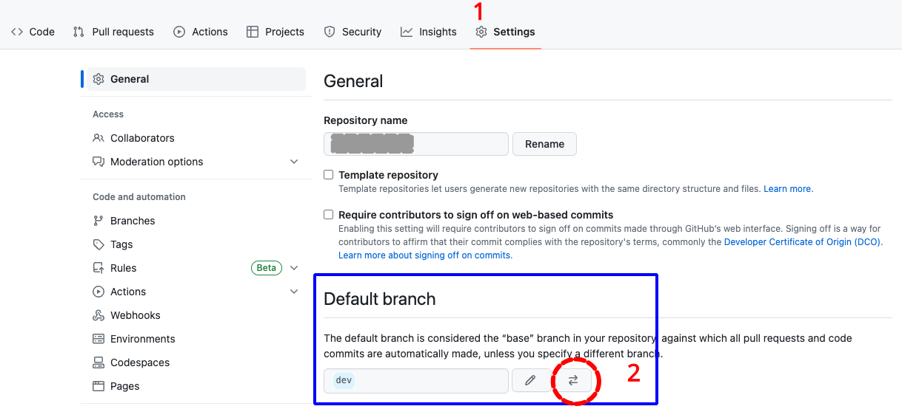
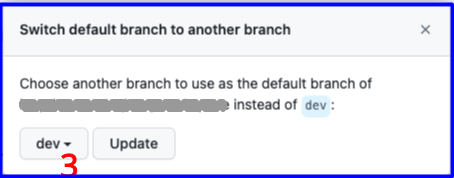
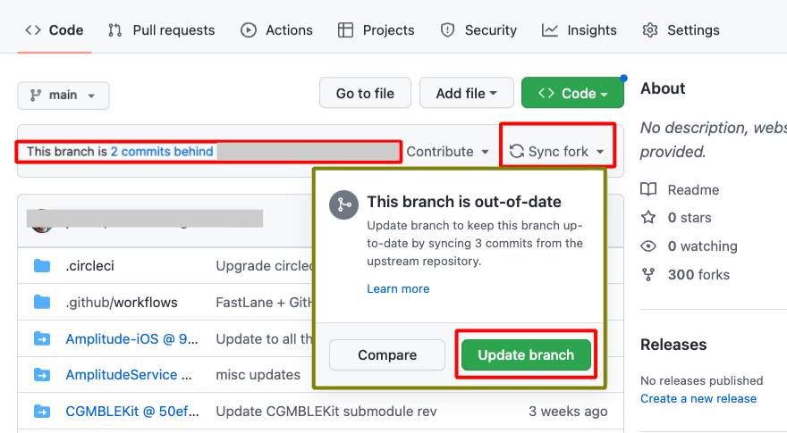

Return to the Released Version
Trio keeps its released version on the main branch. Test versions live on the dev branch and on feature branches.
If Trio shows you a warning at startup saying it was built from dev or from another branch, this page tells you how to get back to the released version.
Why am I seeing a warning?
Trio checks which branch it was built from each time it starts, and warns you if that branch is not main. The warning appears once per start, so it comes back if you quit Trio and open it again.
- The
main branch is the released version and is what almost everyone should run
- The
dev branch is for expert testers — it changes often and contains features that have not been fully tested
- A feature branch contains work on a single change and is usually meant for the person developing it
Seeing this warning does not mean something is broken. It means you are running a test version.
Before You Switch
Check the Version Numbers
Moving from dev back to main is usually a downgrade — the version on dev is normally newer than the version on main.
An older Trio may not be able to open your existing data
Trio stores your history (glucose, pump events, carbs, and algorithm data) in a database on your phone. When a newer version of Trio changes the layout of that database, it upgrades your existing database to match. That upgrade only runs in one direction.
Going back to an older version can therefore fail to open the database you already have. If it does, Trio stops on the loading screen at startup and does not continue.
Before you switch:
- Find the version on
main — see the Trio releases page
- Find the version you are running now — open Trio and go to Settings, where the version is shown at the bottom
- If the version on
main is older than the version you are running, ask on Facebook or Discord whether that particular downgrade is safe before you build
If your build does end up stuck on the loading screen, you have not lost your settings — reinstalling the version you were on before will let Trio open normally again.
Plan the Timing
- Your pod or pump session continues normally as long as you build with the same Apple Developer Account you used last time
- If you are using a different Developer Account, you will get a second, separate Trio app on your phone, and your existing pod will not work with it — plan that change for when you are due for a pod change anyway
- Do not delete your existing Trio app first; building over it keeps your settings
This is not medical advice
Changing app versions changes the software that automates your insulin delivery. If you are unsure whether or when to switch, discuss it with your diabetes care team.
Browser Build
These steps are for people who build Trio using GitHub Actions in a browser.
Set main as Your Default Branch
If you previously followed Configure the dev branch as default, you need to reverse it. If you never changed your default branch, skip to Update Your Fork.
Only the owner of the repository can do this, and you must be logged in — otherwise the Settings tab does not appear.
-
Click on the Settings icon near the top right of your Trio repository
- You may need to scroll down to see the
Default Branch
- Do not tap on the Branches tab on the left under Code and Automation, that is not the correct menu

-
To the right of the default branch name there is a pencil and a left-right arrow icon (⇄)
- Tap on the left-right arrow icon (⇄) to bring up the
Switch default branch to another branch dialog
-
Click on the dropdown next to the current default branch, in this case dev

-
Select main
- Click on the
Update button
- You will be presented with an are-you-sure question
- Click on the red
I understand, update the default branch. button
Your default branch is now main, and your weekly automatic builds will follow main from here on.
Update Your Fork
Tap the Code button (upper left) and make sure the main branch in your fork is up to date.
- Select
main in the branch dropdown menu
- If the message says this branch is "behind", tap the sync
fork button and then the Update branch button

Build Trio from main
Run the Build Trio action, making sure main is selected in the branch dropdown menu.
Follow the normal steps on Build the App, and install the resulting build from TestFlight as usual.
Hit Refresh
After you tap the green Run workflow button, GitHub can be slow to update.
- Refresh the browser if you are unsure if the action started
- Do not start a new action until the first one completes
Mac Build
These steps are for people who build Trio with Xcode on a Mac.
The easiest way is to download a fresh copy of the released code rather than changing the copy you already have.
- Follow Build Trio with Xcode from the beginning
- When the Build Select Script asks you which branch to build, type 1 and press return to select
main
- Continue with the normal build steps
Your settings and pod session are preserved as long as you sign with the same Apple Developer Account as before.
After You Switch
The startup warning stops appearing once you are running a build made from main.
If you still see it:
- Check that the build you installed is actually the new one — open Settings in Trio and look at the version and branch shown at the top
- For a browser build, check that you selected
main in the Build Trio action, not just as your default branch
- Remember that TestFlight may still be offering you the older build — make sure you installed the newest one
Going Back to dev Later
If you want to test again in the future, follow Build Dev with Browser or select the dev branch in the Build Select Script when building with Xcode.